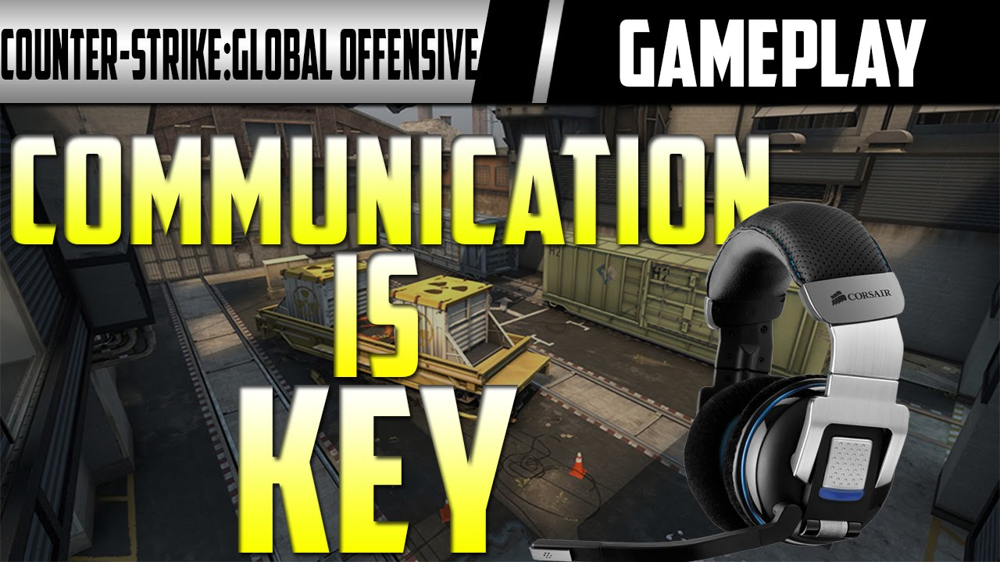
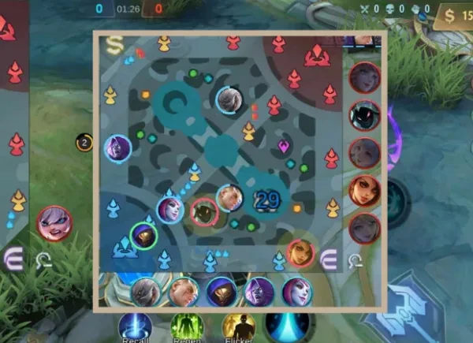
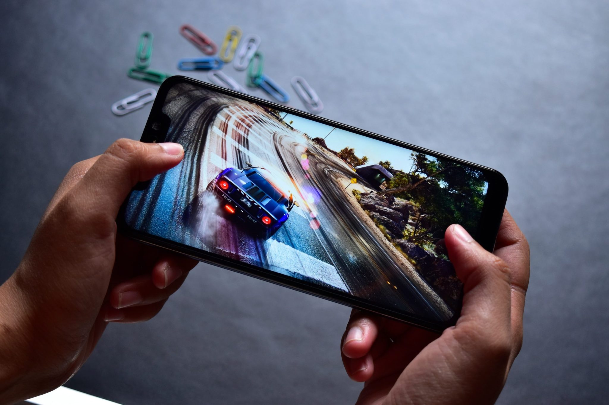

Whether you're new to gaming or an experienced player, mastering the right strategies can significantly enhance your performance. Here are 10 tips to help you level up your gaming skills:
1. Master the Basics

Ensure you understand the basic mechanics of the game. Spend time in tutorials or practice modes to get comfortable with controls and gameplay.
2. Customize Your Settings

Adjust game settings such as sensitivity, key bindings, and graphics to suit your preferences and improve comfort during play.
3. Learn from Pros

Watch professional gamers and streamers. Pay attention to their strategies, positioning, and decision-making to gain insights.
4. Communication is Key
If you're playing team-based games, effective communication can make all the difference. Use voice chat or pings to share information.
5. Stay Calm Under Pressure
Games can get intense, but staying calm helps you make better decisions and react more effectively to challenges.
6. Focus on Map Awareness
In multiplayer games, knowing the map layout, choke points, and spawn locations can give you a significant advantage.
7. Practice Regularly
Consistency is key to improvement. Set aside time regularly to practice and refine your skills.
8. Analyze Your Gameplay

Record and review your gameplay to identify mistakes and areas for improvement.
9. Stay Updated

Games often receive updates and patches. Keep up with patch notes to understand changes and adapt your strategies accordingly.
10. Have Fun

Remember to enjoy the process. Gaming is about having fun, so don't stress too much about winning every match.